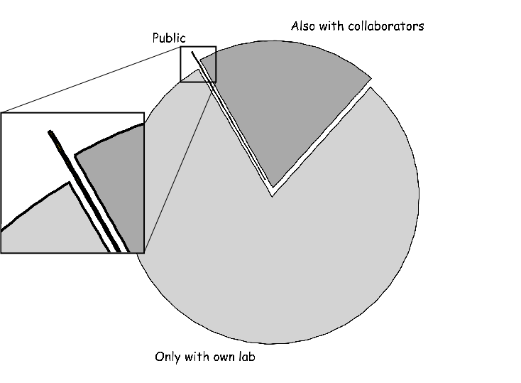

Go FAIR with DataLad
Psychoinformatics lab, Institute of Psychology,
University of Magdeburg
Center for Behavioral Brain Sciences, Magdeburg


F
indableA
ccessibleI
nteroperableR
eusable
FAIR principles
- F1
- (Meta)data are assigned a globally unique and persistent identifier
- F2
- Data are described with rich metadata
- F3
- Metadata clearly and explicitly include the identifier of the data they describe
- F4
- (Meta)data are registered or indexed in a searchable resource
- A1
- (Meta)data are retrievable by their identifier using a standardised ... protocol
- A1.1
- The protocol is open, free, and universally implementable
- A1.2
- The protocol allows for an authentication and authorisation procedure
- A2
- Metadata are accessible, even when the data are no longer available
- I1
- (Meta)data use a formal, accessible ... language for knowledge representation.
- I2
- (Meta)data use vocabularies that follow FAIR principles
- I3
- (Meta)data include qualified references to other (meta)data
- R1
- Meta(data) are richly described with a plurality of accurate and relevant attributes
- R1.1
- (Meta)data are released with a clear and accessible data usage license
- R1.2
- (Meta)data are associated with detailed provenance
- R1.3
- (Meta)data meet domain-relevant community standards
To whom should we be FAIR?
[...] The intent is that these may act as a guideline for those wishing to enhance the reusability of their data holdings.
With whom do we share our data holdings?
DataLad
A data management suite that makes YOU more productive...
...and also yields FAIR resources
that you can share with anyone you see fit.
Datalad principles
- There are only two things in the world: datasets and files.
- A dataset is a Git repository.
- A dataset can have an optional annex for (large) file content tracking (transport to and from the annex managed with Git-annex, https://git-annex.branchable.com).
- Minimization of custom procedures and data structures: Users must not loose data or data access, if DataLad would vanish.
- Complete decentralization, no required central server or service.
- Maximize use of existing 3rd-party infrastructure.
Dataset: tracking content and/or its identifiers
- Dataset ID, Dataset annex (local) storage ID
- two distinct UUIDs
- Dataset version (Git repository state)
- SHASUM
- File key
- configurable checksum (file content based)
Install an existing dataset
request via standard URL,
but dataset ID resolver is possible
$ datalad install http://example.com/ds1Obtain dataset content
request via user-friendly local file path, not internal ID,
regardless of remote actual storage solution properties
ds1/ $ datalad get file2Tracking "remote" data evolution
ability to track any number of dataset "siblings",
in Git or non-Git data stores
ds1/ $ datalad updateKeep up-to-date
apply changes from default or selected sibling
while maintaining local data availability status
ds1/ $ datalad update --merge --reobtain-dataDataset linkage
$ datalad install --dataset . --source http://example.com/importantds inputs/rawdata
$ git diff HEAD~1
diff --git a/.gitmodules b/.gitmodules
new file mode 100644
index 0000000..c3370ba
--- /dev/null
+++ b/.gitmodules
@@ -0,0 +1,3 @@
+[submodule "inputs/rawdata"]
+ path = inputs/rawdata
+ url = http://example.com/importantds
diff --git a/inputs/rawdata b/inputs/rawdata
new file mode 160000
index 0000000..fabf852
--- /dev/null
+++ b/inputs/rawdata
@@ -0,0 +1 @@
+Subproject commit fabf8521130a13986bd6493cb33a70e580ce8572
Arbitrarily deep dataset nesting

"actionable" links to subdatasets/files, seamless handling of dataset trees
Data provenance capture

$ datalad run -m "Perform eye movement event detection"\
--input 'inputs/raw_eyegaze/sub-*/beh/sub-*...tsv.gz' \
--output 'sub-*' \
bash code/compute_all.sh
-- Git commit -- Michael Hanke <michael.hanke@gmail.com>; Fri Sep 21 22:00:47 2018
[DATALAD RUNCMD] Perform eye movement event detection
=== Do not change lines below ===
{
"cmd": "bash code/compute_all.sh",
"dsid": "d2b4b72a-7c13-11e7-9f1f-a0369f7c647e",
"exit": 0,
"inputs": ["inputs/raw_eyegaze/sub-*/beh/sub-*_task-movie_run-*_....tsv.gz"],
"outputs": ["sub-*"],
"pwd": "."
}
^^^ Do not change lines above ^^^
---
sub-01/sub-01_task-movie_run-1_events.png | 2 +-
sub-01/sub-01_task-movie_run-1_events.tsv | 2 +-
...
"Complete" provenance capture
$ datalad containers-run -n nilearn \
--input 'inputs/mri_aligned/sub-*/in_bold3Tp2/sub-*_task-avmovie_run-*_bold*' \
--output 'sub-*/LC_timeseries_run-*.csv' \
"bash -c 'for sub in sub-*; do for run in run-1 ... run-8;
do python3 code/extract_lc_timeseries.py \$sub \$run; done; done'"
-- Git commit -- Michael Hanke <michael.hanke@gmail.com>; Fri Jul 6 11:02:28 2018
[DATALAD RUNCMD] singularity exec --bind {pwd} .datalad/e...
=== Do not change lines below ===
{
"cmd": "singularity exec --bind {pwd} .datalad/environments/nilearn.simg bash..",
"dsid": "92ea1faa-632a-11e8-af29-a0369f7c647e",
"exit": 0,
"inputs": [
"inputs/mri_aligned/sub-*/in_bold3Tp2/sub-*_task-avmovie_run-*_bold*",
".datalad/environments/nilearn.simg"
],
"outputs": ["sub-*/LC_timeseries_run-*.csv"],
"pwd": "."
}
^^^ Do not change lines above ^^^
---
sub-01/LC_timeseries_run-1.csv | 1 +
sub-01/LC_timeseries_run-2.csv | 1 +
...
(Automated) Metadata logistics
- Whole datasets and individual files can have metadata
- Metadata plurality: no need to decide on a single standard
- JSON-LD format (for true semantic graphs, or simple dumps)
- Concept:
- Metadata are automatically (and repeatedly) extracted from source data
- Implementation of metadata extractors decides on content/structure
- Dataset authors/curators decide on extractor selection
- Metadata are managed by DataLad (optionally annexed), and can be separated from a dataset and aggregated into super-datasets
- (Super)datasets can be queried for all available metadata of any content, regardless of that content being locally available or not
- DataLad can serve as a transport layer for metadata
Example JSON-LD metadata structure
{
"@context": {
"@version": 1.1,
"schema": "http://schema.org/",
"name": "schema:name",
"records": {
"@id": "@graph",
"@container": "@type"
},
"nidm": "http://nidm#",
"niiri": "http://niiri#",
"prov": "http://prov#",
"atLocation": "http://prov#atLocation",
"designMatrix": "nidm:designMatrix",
"data": "nidm:designMatrix",
"regressorNames": "nidm:regressorNames"
},
"name": "My NIDM graph",
"records": {
"designMatrix": {
"@id": "niiri:0001",
"name": "Some design matrix",
"atLocation": "DesignMatrix.csv",
"regressorNames": "[motor_left, motor_right]"
},
"data": {
"@id": "niiri:0002",
"name": "Some Data"
}
}
}
a true graph with defined terms, but processable without a graph representation
Metadata-based search for individual files
across datasets, without a DB (server)
$ datalad \
-c datalad.search.index-egrep-documenttype=files \
-f json_pp \
search \
bids.subject.sex:female \
bids.type:t1 \
bids.subject.age:24
{
"dsid": "4842e188-7df5-11e6-8e6b-002590f97d84",
"metadata": {
"@context": {...},
"bids": {...},
"datalad_core": {
"url": [
"http://openneuro.s3.amazonaws.com/ds000008/ds000008_R1.1.0/...MZ92g",
"http://openneuro.s3.amazonaws.com/ds000008/ds000008_R1.1.1/...UyanK",
"http://openneuro.s3.amazonaws.com/ds000008/ds000008_R2.0.0/..._flBz"
]
},
"nifti1": {...},
"parentds": "/tmp/mega/openfmri/ds000008",
"path": "/tmp/mega/openfmri/ds000008/sub-15/anat/sub-15_T1w.nii.gz",
"query_matched": {
"bids.subject.age(years)": "24",
"bids.subject.sex": "female",
"bids.type": "T1"
},
"refcommit": "b18692ef1beefd88055bc0578b7567a8f4fdf8f9",
"type": "file"
}
...
alternative output formats: JSON stream, custom, ...
Publish
- Wide variety of supported storage solutions (SSH-servers, GIN, DropBox, Box.com, Google, WEBDAV, bittorrent, IPFS, ...) via Git-annex
- Full support for data encryption
- Multiple redundant synchronized publication targets are supported ("publish 2TB on GitHub")
- Per-target configuration of accepted content, with dedicated set of permissions and authorization mechanisms
- Export of dataset to FigShare and similar storage solutions
Extend DataLad
- Separate Python packages, anybody can develop their own
- Support for tailored solutions with narrower scope or specific audiences extensions
- Extensions can provides additional commands, procedures, metadata extractors, webapps
- Available extensions
- crawler: track web resources in automated data distributions
- neuroimaging: neuroimaging research data and workflow
- containers: support for containerized computational environments
- webapp: REST API for querying/manipulating datasets
- hirni: imaging raw data management/entry
Summary
What FAIR issues does DataLad not solve?
- I2
- (Meta)data use vocabularies that follow FAIR principles
- I3
- (Meta)data include qualified references to other (meta)data
- R1.1
- (Meta)data are released with a clear and accessible data usage license
- R1.3
- (Meta)data meet domain-relevant community standards
This is up to "you"!
Acknowledgements
|
|
Website: http://datalad.org
Development: http://github.com/datalad
Talk: https://matrix.to/#/#datalad:matrix.org
Open data: http://datasets.datalad.org